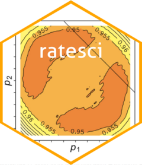

Confidence intervals for rate ratio (RR) with independent binomial or Poisson rates.
Source:R/rrci.R
rrci.RdConfidence intervals for comparisons of two binomial or Poisson rates. This convenience wrapper function produces a selection of the methods below as appropriate for the selected distribution (binomial or Poisson) for the rate ratio (/relative risk) contrast (RR), with or without continuity adjustment.
SCAS (skewness-corrected asymptotic score)
Miettinen-Nurminen, Koopman, Gart-Nam Asymptotic Score methods
MOVER-W
MOVER-J (based on Jeffreys intervals)
Approximate normal (Katz log) methods (strongly advise this is not used for any purpose but included for reference)
Arguments
- x1, x2
Numeric vectors of numbers of events in group 1 & group 2 respectively.
- n1, n2
Numeric vectors of sample sizes (for binomial rates) or exposure times (for Poisson rates) in each group.
- distrib
Character string indicating distribution assumed for the input data:
"bin" = binomial (default),
"poi" = Poisson.- level
Number specifying confidence level (between 0 and 1, default 0.95).
- std_est
logical, specifying if the crude point estimate for the contrast value should be returned (TRUE, default) or the method-specific alternative point estimate consistent with a 0% confidence interval (FALSE).
- cc
Number or logical (default FALSE) specifying (amount of) continuity adjustment. Numeric value between 0 and 0.5 is taken as the gamma parameter in Laud 2017, Appendix S2 (
cc = TRUEtranslates to 0.5 for 'conventional' Yates adjustment).- precis
Number (default 6) specifying precision (i.e. number of decimal places) to be used in root-finding subroutine for the score confidence intervals. (Note other methods use closed-form calculations so are not affected.)
Value
A list containing the following components:
- estimates
an array containing the confidence interval for RR using various methods. The methods shown depends on the cc argument (if cc = TRUE then the continuity-adjusted methods are given).
- call
details of the function call.
References
Laud PJ. Equal-tailed confidence intervals for comparison of rates. Pharmaceutical Statistics 2017; 16:334-348.
Author
Pete Laud, p.j.laud@sheffield.ac.uk
Examples
# Selected example datasets from Newcombe 1998 and Fagerland et al. 2011
# (note Fagerland et al. appear to have the Miettinen-Nurminen method
# labelled as Koopman)
rrci(
x1 = c(5, 7), n1 = c(56, 34),
x2 = c(0, 1), n2 = c(29, 34),
precis = 4
)
#> $estimates
#> , , 5/56 vs 0/29
#>
#> lower est upper
#> SCAS 0.7696 Inf Inf
#> Gart-Nam 0.7822 Inf Inf
#> Miettinen-Nurminen 0.7175 Inf Inf
#> Koopman 0.7257 Inf Inf
#> MOVER-W 0.6292 Inf Inf
#> MOVER-J 0.8753 Inf Inf
#> Katz log 0.0000 Inf Inf
#> Adjusted log 0.3287 Inf 100.3502
#>
#> , , 7/34 vs 1/34
#>
#> lower est upper
#> SCAS 1.2383 7 129.3294
#> Gart-Nam 1.2532 7 130.8308
#> Miettinen-Nurminen 1.2086 7 43.0330
#> Koopman 1.2209 7 42.5757
#> MOVER-W 1.1537 7 41.9763
#> MOVER-J 1.2771 7 67.1689
#> Katz log 0.9096 7 53.8695
#> Adjusted log 0.9241 7 27.0523
#>
#>
#> $call
#> distrib level cc
#> "bin" "0.95" "FALSE"
#>
# With conventional continuity adjustment
rrci(
x1 = c(5, 7), n1 = c(56, 34),
x2 = c(0, 1), n2 = c(29, 34),
precis = 4, cc = TRUE
)
#> $estimates
#> , , 5/56 vs 0/29
#>
#> lower est upper
#> SCAS_cc 0.4628 Inf Inf
#> Gart-Nam_cc 0.4678 Inf Inf
#> Miettinen-Nurminen_cc 0.4765 Inf Inf
#> Koopman_cc 0.4810 Inf Inf
#> MOVER-W_cc 0.4779 Inf Inf
#> MOVER-J_cc 0.5654 Inf Inf
#>
#> , , 7/34 vs 1/34
#>
#> lower est upper
#> SCAS_cc 0.9360 7 27593.3534
#> Gart-Nam_cc 0.9456 7 43279.8893
#> Miettinen-Nurminen_cc 0.9424 7 149.5435
#> Koopman_cc 0.9512 7 147.7432
#> MOVER-W_cc 0.9712 7 136.6421
#> MOVER-J_cc 1.0356 7 282.5531
#>
#>
#> $call
#> distrib level cc
#> "bin" "0.95" "0.5"
#>
# With intermediate continuity adjustment
rrci(
x1 = c(5, 7), n1 = c(56, 34),
x2 = c(0, 1), n2 = c(29, 34),
precis = 4, cc = 0.25
)
#> $estimates
#> , , 5/56 vs 0/29
#>
#> lower est upper
#> SCAS_cc(0.25) 0.5853 Inf Inf
#> Gart-Nam_cc(0.25) 0.5928 Inf Inf
#> Miettinen-Nurminen_cc(0.25) 0.5788 Inf Inf
#> Koopman_cc(0.25) 0.5847 Inf Inf
#> MOVER-W_cc(0.25) 0.5444 Inf Inf
#> MOVER-J_cc(0.25) 0.6838 Inf Inf
#>
#> , , 7/34 vs 1/34
#>
#> lower est upper
#> SCAS_cc(0.25) 1.0724 7 422.9320
#> Gart-Nam_cc(0.25) 1.0843 7 437.4584
#> Miettinen-Nurminen_cc(0.25) 1.0643 7 71.7594
#> Koopman_cc(0.25) 1.0746 7 70.9530
#> MOVER-W_cc(0.25) 1.0563 7 66.8112
#> MOVER-J_cc(0.25) 1.1453 7 121.2444
#>
#>
#> $call
#> distrib level cc
#> "bin" "0.95" "0.25"
#>